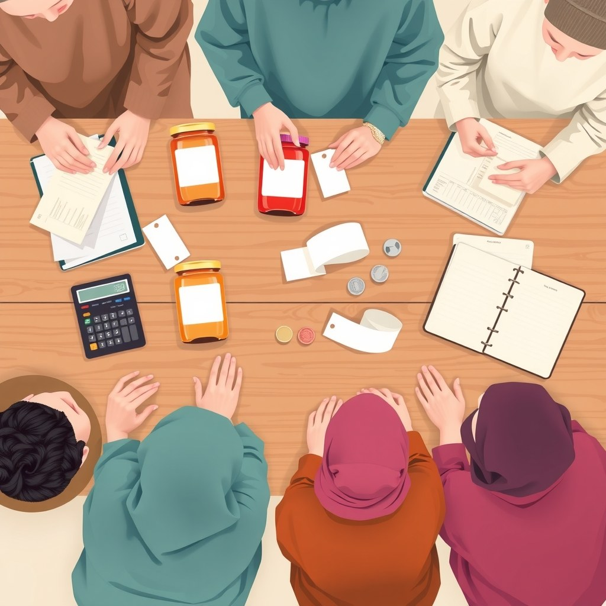
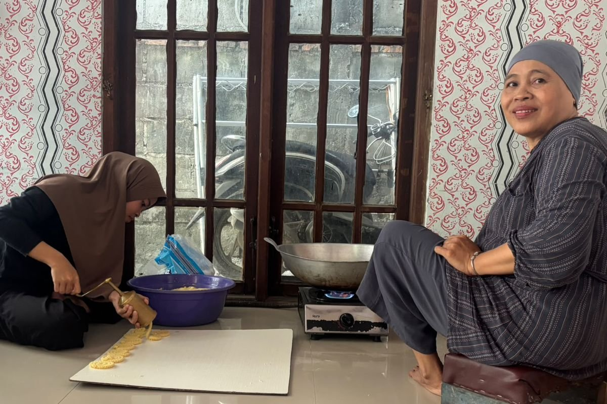

Apa Itu COGS dan Bedanya dengan Biaya Operasional UMKM
Banyak pemilik usaha kecil sering mencampursepadankan seluruh pengeluaran bulanan ke dalam satu kantong yang sama. Padahal, untuk membangun pondasi bisnis yang sehat, kamu harus paham perbedaan mendasar antara biaya langsung pembuat produk dan biaya operasional usaha.
COGS adalah seluruh biaya langsung yang dikeluarkan untuk membuat satu unit produk atau menghadirkan layanan. Dalam dunia akuntansi biaya, COGS menduduki posisi khusus di atas garis laba kotor (gross profit line). Mengutip penjelasan Karen Berman dan Joe Knight dalam buku Financial Intelligence: A Manager’s Guide to Knowing What the Numbers Really Mean, memisahkan biaya di atas dan di bawah garis ini sangat menentukan akurasi penilaian kesehatan usaha. Jika biaya di atas garis melambung tanpa terdeteksi, usaha tersebut pada dasarnya menjual rugi di setiap transaksi.
Bayangkan kamu mengoperasikan warung nasi goreng. Bahan-bahan seperti beras, telur, minyak goreng, bumbu, hingga kotak kertas pembungkus adalah bagian dari COGS. Tanpa bahan tersebut, sepiring nasi goreng tidak pernah ada. Sebaliknya, biaya sewa spanduk, token listrik untuk penerangan warung, atau pulsa internet untuk promosi sosial media masuk ke dalam biaya operasional (operating expenses) yang berada di bawah garis laba kotor.
Di dalam praktik harian, terdapat pula area abu-abu. Misalnya, apakah upah koki yang memasak nasi goreng masuk ke COGS atau biaya operasional? Berman dan Knight menyarankan: jika koki dibayar berdasarkan berapa porsi yang dibuat atau jam kerja langsung memasak produk, itu adalah upah langsung (direct labor) yang masuk COGS. Namun, jika ia adalah manajer toko bergaji tetap bulanan yang tugasnya mengawasi inventaris dan kebersihan, pos tersebut masuk ke biaya operasional.
Kenapa Memahami COGS Sangat Penting saat Harga Bahan Baku Meroket

Fenomena kenaikan harga bahan baku dan kemasan plastik belakangan ini menghantam berbagai sektor usaha kecil di Indonesia. Banyak pelaku UMKM keluhkan harga minyak, telur, hingga wadah pembungkus yang melonjak tajam dalam waktu singkat. Situasi ini menempatkan pemilik usaha pada posisi serba salah: menahan harga jual berarti mengikhlaskan margin laba hancur, sementara menaikkan harga secara gegabah berisiko membuat pelanggan setia kabur ke pesaing.
Ketika kamu tidak menghitung ulang COGS secara berkala saat lonjakan harga terjadi, hilangnya keuntungan sering kali baru disadari di akhir bulan saat uang kas habis padahal penjualan terasa ramai. Ini yang disebut dengan fenomena omzet semu.
Ketahuilah bahwa harga bahan baku yang kamu beli bulan lalu sudah tidak relevan untuk menentukan harga jual hari ini. Menggunakan istilah Josh Kaufman dalam buku The Personal MBA: A World-Class Business Education in a Single Volume, kamu harus senantiasa menghitung berdasarkan replacement cost (biaya penggantian), yaitu biaya riil yang harus kamu keluarkan hari ini untuk membeli kembali bahan baku yang sama untuk proses produksi berikutnya.
Jika kamu membeli tepung seharga Rp10.000 per kg bulan lalu dan saat ini harganya sudah menjadi Rp14.000 per kg, maka modal dasar perhitungan produkmu untuk porsi besok adalah Rp14.000, bukan Rp10.000. Mengabaikan konsep replacement cost ini adalah penyebab utama mengapa banyak toko kelontong atau tempat makan mendadak bangkrut padahal barang dagangannya selalu laku keras.
Cara Menghitung COGS dan Harga Jual UMKM Langkah demi Langkah
Untuk menghitung COGS dan menentukan harga jual yang aman tanpa membuat pembeli lari, kamu bisa mengikuti urutan langkah bernomor di bawah ini:
Rincikan Seluruh Komponen Biaya Langsung
Data semua bahan mentah, kemasan (stiker, botol, plastik, dus), serta biaya tenaga kerja langsung yang digunakan untuk memproduksi sejumlah unit tertentu. Pastikan menggunakan harga beli penggantian (replacement cost) terbaru.
Gunakan Rumus Dasar COGS Per Unit
Bagi total seluruh biaya langsung yang terkumpul dalam satu gelombang produksi (batch) dengan jumlah total unit bersih produk yang layak jual (setelah dikurangi potensi produk cacat atau waste).
Pahami Empat Metode Penetapan Harga
Menurut Josh Kaufman dalam The Personal MBA, terdapat empat cara utama menentukan harga jual: replacement cost (biaya modal ditambah markup), market comparison (membandingkan dengan harga kompetitor), discounted cash flow (khusus aset finansial), dan value comparison (membandingkan dengan nilai atau manfaat yang diterima pelanggan). Untuk UMKM, kombinasikan replacement cost sebagai batas bawah dan value comparison sebagai batas atas.
Gunakan Metode Value-Based Pricing untuk Melindungi Margin
Alih-alih sekadar memakai rumus Cost-Plus Pricing (Modal + % Markup), lihatlah nilai unik produkmu. Jika sambal kemasanmu menggunakan resep rempah langka yang tahan 3 bulan tanpa pengawet sintesis, pelanggan bersedia membayar lebih mahal karena kepraktisan dan rasanya, bukan hanya karena modal cabainya.
Jika kamu ingin mendalami strategi promosi dan cara mengomunikasikan nilai produk ini agar calon pembeli tidak peka terhadap kenaikan harga, kamu bisa mempelajari strategi keluar dari perang harga yang membahas reposisi penawaran secara mendalam.
Contoh Perhitungan COGS dan Harga Jual Produk Makanan & Kemasan

Agar gambaran matematisnya makin jelas, mari kita bedah satu contoh studi kasus perhitungan riil usaha pembuatan Sambal Cumi Kemasan botol plastik ukuran 150 gram untuk 1 gelombang produksi (100 botol).
| Komponen Biaya Langsung | Rincian Biaya Terbaru | Total Biaya |
|---|---|---|
| Bahan Utama (Cabai, Cumi, Bumbu, Minyak) | Berdasarkan replacement cost terbaru | Rp400.000 |
| Kemasan (Botol Kaca, Seal Aluminium, Stiker) | Harga plastik & kemasan meroket | Rp200.000 |
| Upah Langsung (2 Orang Asisten Masak) | Dibayar per batch produksi | Rp150.000 |
| Total COGS (100 Botol) | Jumlah Biaya Langsung | Rp750.000 |
Dari tabel di atas, kita dapatkan hitungan COGS dasar per unit:
COGS per Botol = Rp750.000 / 100 Botol = Rp7.500 per botol
Jika produsen hanya memakai pendekatan klasik Cost-Plus Pricing dengan markup 30%, maka harga jualnya adalah:
Harga Jual = Rp7.500 + (30% x Rp7.500) = Rp9.750 (dibulatkan Rp10.000)
Namun, angka Rp10.000 ini sangat rentan! Jika harga cabai meroket lagi sebesar 20%, COGS naik menjadi Rp8.300 dan margin bersih usahamu langsung habis tergerus biaya operasional sewa tempat dan promosi.
Di sinilah strategi Value Comparison Pricing masuk. Pemilik usaha melakukan riset pasar dan menemukan bahwa sambal sejenis di pasaran dijual seharga Rp18.000 hingga Rp25.000. Karena produknya menggunakan cumi segar tanpa pengawet dan dikemas rapat tahan bocor, ia menetapkan harga jual di angka Rp15.000 per botol.
Dengan harga Rp15.000, margin laba kotor yang didapat adalah:
Margin Laba Kotor = ((Rp15.000 - Rp7.500) / Rp15.000) x 100% = 50%
Dengan margin laba kotor sebesar 50% (Rp7.500 per botol), bisnis ini memiliki bantalan yang sangat aman untuk menyerap kenaikan harga bahan baku di masa depan tanpa perlu terburu-buru menaikkan harga jual ke konsumen setiap minggu.
Bagi kamu yang menjalankan usaha kuliner offline atau toko fisik, kombinasi metode ini juga diselaraskan dengan panduan tentang cara bersaing tanpa mengandalkan diskon gila-gilaan agar nilai pelayanan tokomu makin menonjol di mata pembeli.
Kesalahan Umum UMKM dalam Menghitung COGS dan Menetapkan Harga
Ketika biaya produksi membengkak, banyak pengusaha terjebak pada keputusan impulsif. Berikut adalah empat kesalahan paling sering terjadi di lapangan beserta cara mengatasinya:
- Panik dan Langsung Memangkas Kualitas Bahan Baku: Mengganti bahan baku dengan kualitas jauh lebih rendah demi mempertahankan harga lama adalah jebakan mematikan. Pembeli setia akan langsung merasakan perubahan rasa atau ketahanan produk, merasa kecewa, lalu pindah permanen. Daripada merusak kualitas, lebih baik sedikit mengurangi porsi (shrinkflation) atau membuat varian ukuran baru yang lebih terjangkau.
- Memasukkan Seluruh Biaya Kantor ke COGS: Memasukkan tagihan listrik AC rumah, biaya admin bank, hingga gaji pemilik usaha yang tidak memproduksi barang ke dalam COGS membuat perhitungan modal produk membengkak tidak realistis. Pisahkan dengan tegas biaya operasional bulanan di bawah garis laba kotor.
- Mengabaikan Biaya Penyusutan dan Kemasan Kecil: Banyak pemula hanya menghitung bahan utama (seperti tepung dan daging), tetapi lupa memasukkan isolasi, bubble wrap, stiker label, sendok plastik, atau gas LPG. Biaya-biaya kecil yang tidak dicatat ini jika ditotal bisa menggerus 5% hingga 10% margin laba kotor.
- Menetapkan Harga HANYA Berdasarkan Kebiasaan Pesaing: Ikut-ikutan menetapkan harga murah hanya karena toko sebelah menjual di harga tersebut sangat berbahaya. Kamu tidak pernah tahu apakah kompetitor tersebut memiliki jalur pasokan bahan baku yang lebih murah, menggunakan modal sendiri tanpa sewa, atau sebenarnya mereka juga sedang menuju kebangkrutan karena menjual rugi.
Menaikkan harga jual memang tidak pernah menyenangkan bagi pelanggan. Namun, bisnis yang jujur mempertahankan kualitas dengan harga masuk akal jauh lebih dihormati dan bertahan lama daripada bisnis yang pura-pura murah tetapi perlahan menurunkan kualitas produknya sampai tak layak dikonsumsi.
Cara Uji Pemahaman: Apakah Struktur Harga Bisnismu Sudah Aman?
Sebelum kamu menutup panduan ini dan mulai membuka lembar pencatatan keuangan bisnismu, cobalah uji pemahamanmu dengan menjawab tiga pertanyaan mandiri berikut menggunakan bahasamu sendiri:
- Dapatkah kamu memisahkan mana pengeluaran usaha minggu ini yang masuk ke dalam komponen COGS (di atas garis laba kotor) dan mana yang masuk ke biaya operasional umum (di bawah garis)?
- Jika supplier utama bahan bakumu mendadak menaikkan harga sebesar 15% besok pagi, berapa rupiah tepatnya COGS per unit terbarumu, dan berapa persen sisa margin laba kotor yang kamu miliki jika harga jual tidak diubah?
- Apa nilai tambah spesifik (value comparison) dari produkmu yang membuat pelanggan rela membayar lebih mahal dibandingkan produk serupa milik kompetitor di pasaran?
Jika kamu bisa menjawab ketiga pertanyaan di atas dengan angka dan argumen yang jelas, berarti kamu sudah siap mengelola struktur biaya usahamu dengan tangguh. Ingat, sistem pencatatan keuangan dan penentuan harga yang rapi akan selalu mengalahkan rasa panik saat menghadapi gejolak ekonomi.
Untuk menambah wawasan dalam merancang model bisnis dan ekosistem usaha yang tahan banting, sempatkan juga membaca kumpulan artikel di katalog panduan bisnis BiB yang terus diperbarui setiap hari.
Sumber
- UMKM di Rorotan Keluhkan Harga Bahan Baku hingga Plastik yang Meroket — Kompas.com · 29 Jul 2026